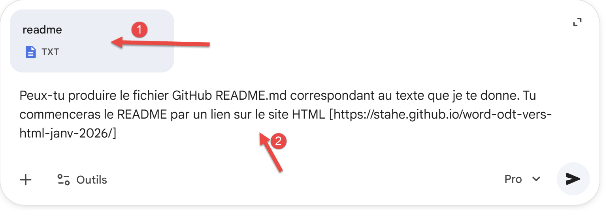
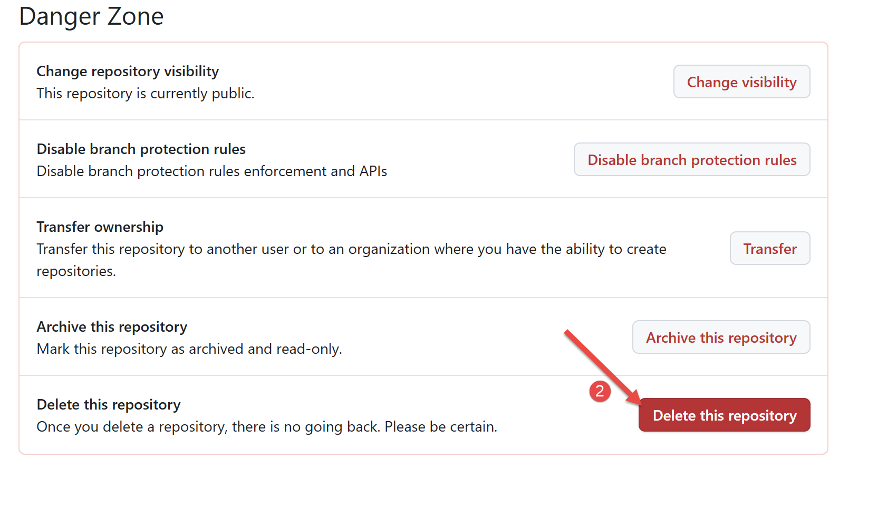

12. Die HTML-Website auf GitHub hosten
Es war Gemini selbst, der mir vorschlug, die von seinen beiden Skripten erstellte HTML-Seite auf GitHub zu hosten:1 . Ich wusste gar nicht, dass das möglich ist. GitHub ist eine Plattform, auf der Entwicklungsprojekte gehostet werden. Es erscheint daher naheliegend, dort Programmierkurse zu veröffentlichen.
Zunächst benötigen Sie ein GitHub-Konto. Erstellen Sie bei Bedarf eines.
Melden Sie sich bei Ihrem GitHub-Konto an:
 |
- Unter [2] sehen Sie Ihre bestehenden Repositorys, falls Sie welche haben;
- Erstellen Sie unter [3] ein neues GitHub-Repository;
 |
- Verwenden Sie unter [1] den Namen, den Sie in [config.py] angegeben haben:
"repo_url": "https://github.com/stahe/word-odt-vers-html-janv-2026",
- In [2] können Sie ebenfalls dasselbe wie in [config.py] eingeben:
- Bestätigen Sie in [3] die Erstellung Ihres GitHub-Repositorys;
 |
Es wird empfohlen, für jedes GitHub-Repository eine [README.md]-Datei zu erstellen, die anstelle des obigen Bildschirms angezeigt wird. Diese muss in Markdown geschrieben sein, was nicht ganz einfach ist. Wir erstellen daher eine Textdatei mit dem Inhalt, den wir in der README-Datei sehen möchten. Anschließend bitten wir die KI, uns die entsprechende README.md-Datei zu liefern.
Die Textdatei [readme.txt] sieht wie folgt aus:
Die Eingabeaufforderung für Gemini lautet dann wie folgt:
 |
- In [1] die angehängte Datei [readme.txt];
- In [2] die Eingabeaufforderung;
Kopieren Sie die Antwort, die Gemini Ihnen gibt, in die Datei [README.md] in Ihrem Arbeitsordner. Hier ist die Antwort, die Gemini mir gegeben hat:
Er hat mir eine sehr ausführliche README-Datei zur Verfügung gestellt. Das liegt daran, dass Gemini dieses Projekt, an dem wir seit Wochen arbeiten, sehr gut kennt. Ihr werdet wahrscheinlich eine weniger detaillierte [README.md]-Datei erhalten.
Kommen wir nun zurück zu unserem Arbeitsordner:
 |
- In [2] die README-Datei, die Sie gerade bearbeitet haben;
- In [1] erklärt die Datei [deploy.txt], wie Sie Ihre HTML-Website in Ihr GitHub-Repository exportieren;
Der Inhalt der Datei [deploy.txt] lautet wie folgt:
Dies ist die Befehlsfolge, die Ihre HTML-Website in Ihr GitHub-Repository exportiert. Sie müssen Zeile 7 mit der URL Ihres eigenen GitHub-Repositorys ändern, die in der Datei [config.py] zu finden ist:
Sie müssen außerdem eine weitere URL in der Datei [robots.txt] überprüfen:
 |
Der Inhalt der Datei [robots.txt] lautet wie folgt:
Geben Sie in Zeile 3 die URL Ihrer Website ein, dieselbe wie in der Datei [config.py]:
# Veröffentlichungs-URL der Website (z. B. GitHub Pages)
"site_url": "https://stahe.github.io/word-odt-vers-html-janv-2026/",
Die Datei [robots.txt] wird beim lokalen Erstellen der Website nicht verwendet, aber sie wird benötigt, wenn die Website auf GitHub gehostet wird.
Die Befehlsfolge in [deploy.txt] verwendet eine Software namens Git. Sie müssen diese installieren [Git – Installation für Windows].
Überprüfen Sie anschließend die Datei [.gitignore] in Ihrem Arbeitsordner. Sie teilt Git mit, welche Dateien ignoriert werden sollen. Meine Datei [.gitignore] sieht wie folgt aus:
Es ist ganz einfach. Wir ignorieren alle Dateien (Zeile 2) außer der Datei [README.md] (Zeile 5). GitHub ist dafür gedacht, Entwicklungsprojekte zu hosten. In der Regel wird das gesamte Entwicklungsprojekt auf GitHub exportiert. Wir möchten jedoch lediglich eine HTML-Website exportieren, kein Entwicklungsprojekt. Die einzige Datei, die wir in unser GitHub-Repository exportieren wollen, ist die Datei [README.md], die den Besuchern erklärt, was unsere HTML-Website enthält.
Geben Sie nun in Ihrem Terminal die folgenden Befehlssequenz in der in [deploy.txt] angegebenen Reihenfolge bis zum Befehl 8 ein. Führen Sie den Befehl 9 vorerst nicht aus.
PS C:\Data\st-2025\GitHub Pages\word-odt-vers-html\v2> git init
Leeres Git-Repository in C:/Data/st-2025/GitHub Pages/word-odt-vers-html/v2/.git/ initialisiert
PS C:\Data\st-2025\GitHub Pages\word-odt-vers-html\v2> git branch -M main
PS C:\Data\st-2025\GitHub Pages\word-odt-vers-html\v2> git add .
PS C:\Data\st-2025\GitHub Pages\word-odt-vers-html\v2> git commit -m "Initial commit: Source MkDocs"
[main (root-commit) 7cba5b1] Erster Commit: MkDocs-Quelle
1 Datei geändert, 89 Einfügungen(+)
create mode 100644 README.md
PS C:\Data\st-2025\GitHub Pages\word-odt-vers-html\v2> git remote add origin https://github.com/stahe/word-odt-vers-html-janv-2026.git
PS C:\Data\st-2025\GitHub Pages\word-odt-vers-html\v2> git push -u origin main
Objekte werden aufgelistet: 3, fertig.
Objekte werden gezählt: 100 % (3/3), fertig.
Delta-Komprimierung mit bis zu 8 Threads
Objekte werden komprimiert: 100 % (2/2), fertig.
Objekte schreiben: 100 % (3/3), 1,70 KiB | 1,70 MiB/s, fertig.
Insgesamt 3 (Delta 0), wiederverwendet 0 (Delta 0), Pack-wiederverwendet 0 (von 0)
Nach https://github.com/stahe/word-odt-vers-html-janv-2026.git
* [neuer Zweig] main -> main
Zweig „main“ eingerichtet, um „origin/main“ zu verfolgen.
Klicken Sie bei gedrückter Strg-Taste auf die URL in Zeile 17. Dadurch gelangen Sie zu Ihrem GitHub-Repository:
 |
- In [1] die URL Ihres GitHub-Repositorys;
- In [2] die neue README.md;
Gehen wir nun zu Befehl 9 in der Datei [deploy.txt]. Dieser exportiert die HTML-Website auf GitHub:
PS C:\Data\st-2025\GitHub Pages\word-odt-vers-html\v2> python -m mkdocs gh-deploy
INFO - Bereinigung des Website-Verzeichnisses
INFO - Dokumentation wird in das Verzeichnis erstellt: C:\Data\st-2025\GitHub Pages\word-odt-vers-html\v2\site
INFO - Die Datei „les-exemples.md“ enthält einen Link „#_Les_exemples“, aber auf dieser Seite gibt es keinen solchen Anker.
INFO - Dokumentation in 1,79 Sekunden erstellt
WARNUNG - Versionsprüfung übersprungen: In der vorherigen Bereitstellung wurde keine Version angegeben.
INFO - Kopieren von 'C:\Data\st-2025\GitHub Pages\word-odt-vers-html\v2\site' in den Zweig 'gh-pages' und Hochladen auf GitHub.
Objekte werden aufgelistet: 91, fertig.
Objekte werden gezählt: 100 % (91/91), fertig.
Delta-Komprimierung mit bis zu 8 Threads
Objekte werden komprimiert: 100 % (85/85), fertig.
Objekte werden geschrieben: 100 % (91/91), 1,64 MiB | 2,01 MiB/s, fertig.
Insgesamt 91 (Delta 9), wiederverwendet 0 (Delta 0), Pack-wiederverwendet 0 (von 0)
remote: Deltas auflösen: 100 % (9/9), fertig.
remote:
remote: Erstelle einen Pull-Request für „gh-pages“ auf GitHub unter:
remote: https://github.com/stahe/word-odt-vers-html-janv-2026/pull/new/gh-pages
remote:
An https://github.com/stahe/word-odt-vers-html-janv-2026.git
* [neuer Zweig] gh-pages -> gh-pages
INFO - Ihre Dokumentation sollte in Kürze unter folgender Adresse verfügbar sein: https://stahe.github.io/word-odt-vers-html-janv-2026/
Klicken Sie bei gedrückter Strg-Taste auf die URL in Zeile 21. Dadurch gelangen Sie zu Ihrer neuen HTML-Website auf GitHub:
 |
- In [1] sehen wir, dass Sie eine Website auf GitHub anzeigen;
Es ist extrem leicht, bei der Ausführung der Befehle aus [deploy.txt] Fehler zu machen. Es ist dann schwierig, zurückzugehen, da Git sich merkt, was man (falsch) gemacht hat. Um von vorne zu beginnen, zeigen Sie den Arbeitsordner an:
 |
- Löschen Sie in [1] den Ordner [.git];
Kehren Sie anschließend zu PyCharm zurück und führen Sie die Befehlsfolge aus [deploy.txt] erneut aus.
Was tun, wenn Sie Ihr ODT-/DOCX-Dokument ändern? Führen Sie die folgenden 3 Schritte aus:
- Konvertieren Sie Ihr ODT-/DOCX-Dokument erneut mit [convert];
- Erstellen Sie die HTML-Website mit [build];
- Exportieren Sie die HTML-Website mit dem Befehl [python -m mkdocs gh-deploy] auf GitHub. Dieser Befehl reicht aus, solange Sie die Datei [README.md] nicht ändern. Wenn Sie die Datei [README.md] ändern, müssen Sie einige weitere Befehle ausführen:
Wenn Sie nur die README-Datei geändert haben, sind nur die Befehle 1, 3 und 4 erforderlich. Befehl 5 ist überflüssig, wenn Sie die HTML-Website bereits bereitgestellt haben und sich seitdem nichts geändert hat.
Was tun, wenn Sie von vorne beginnen möchten, weil etwas schiefgelaufen ist? Sie können Ihr GitHub-Repository löschen und alle Schritte aus dem Kapitel „12 “ erneut ausführen. Die Option zum Löschen eines GitHub-Repositorys ist gut versteckt:
 |
- Gehen Sie unter [1] zu den Repository-Einstellungen;
 |
Gehen Sie ganz nach unten auf der Seite [settings]. Dort finden Sie die Schaltfläche zum Löschen Ihres Repositorys [2].
-
Fußnote für GitHub ↩